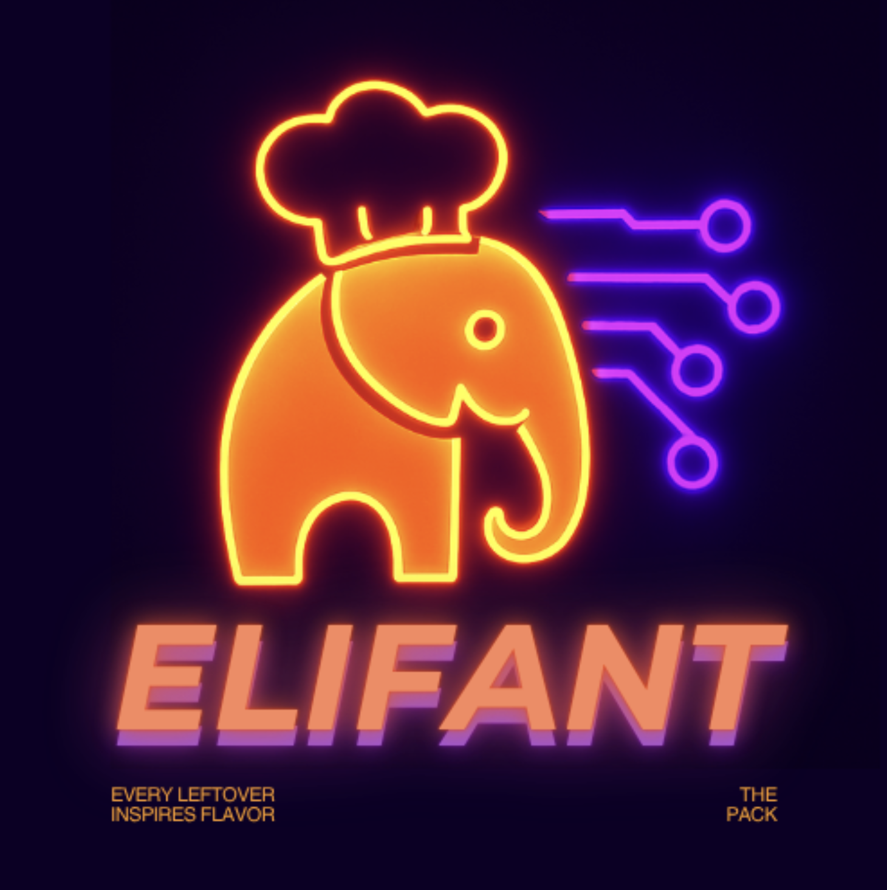
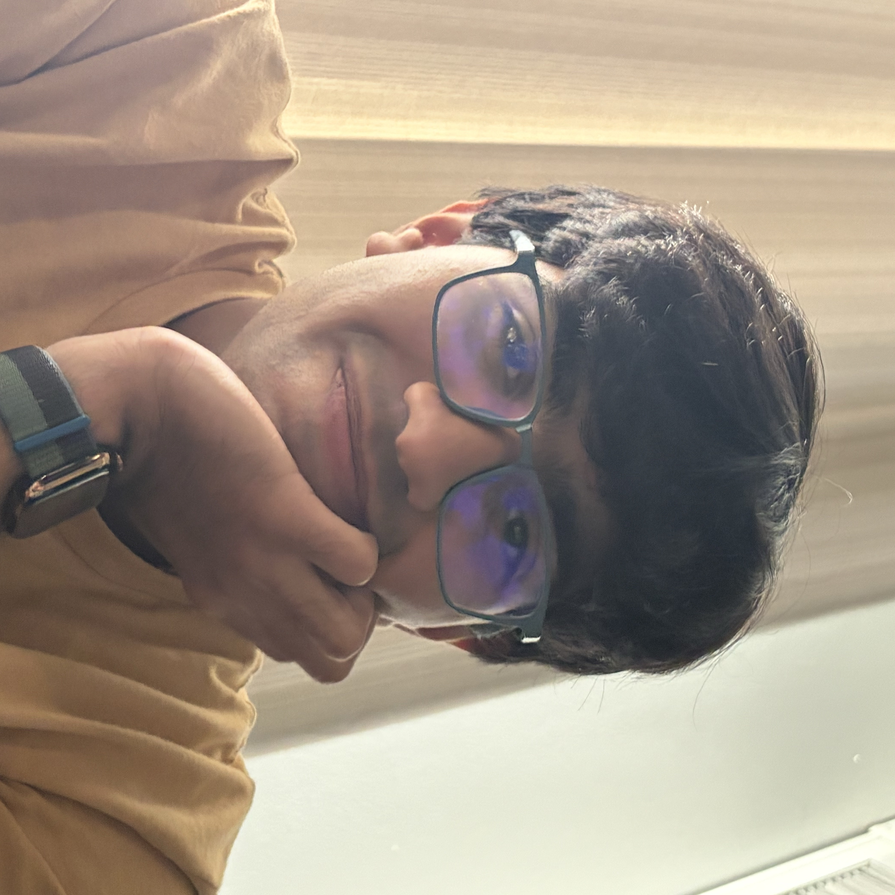

Moody
An iOS journal with mood tracking, guided breathing, and achievements drawn from your writing using on-device Apple Intelligence.
Hi, I’m
I study Computer Science at Purdue and build
apps for the web and iOS.
An iOS journal with mood tracking, guided breathing, and achievements drawn from your writing using on-device Apple Intelligence.
A real-time sign language translator and learning tool. Hand shapes become text and speech through your webcam.

↗Every Leftover Inspires Flavor — a web project built around making use of leftover food.
An online library management system, also available as a Python-only application.
My YouTube channel for filmmaking and visual storytelling.

I’m a Computer Science student at Purdue University in Indianapolis. I’m interested in software engineering and enjoy working through problems in different ways.
I’ve worked on projects at hackathons and on my own, from a sign language translator to a personal journal. Outside of programming, I enjoy design and filmmaking.